你是否淹没在信息之中，却对知识依然饥渴？
你把自己的
私人笔记放在哪里？想法、个人计划、备考笔记、送礼灵感、
操作指南、梦境、商业构想、理财策略、会议纪要，还有写给自己的
教练笔记。成堆的文档、草图和随笔散落在文件系统、云端、网页
和便利贴上？你是否担心自己知识的隐私？写下来之后，你还能
找到某一条笔记吗？在浏览、阅读或书写时，你知道它们之间
如何关联吗？不知道？
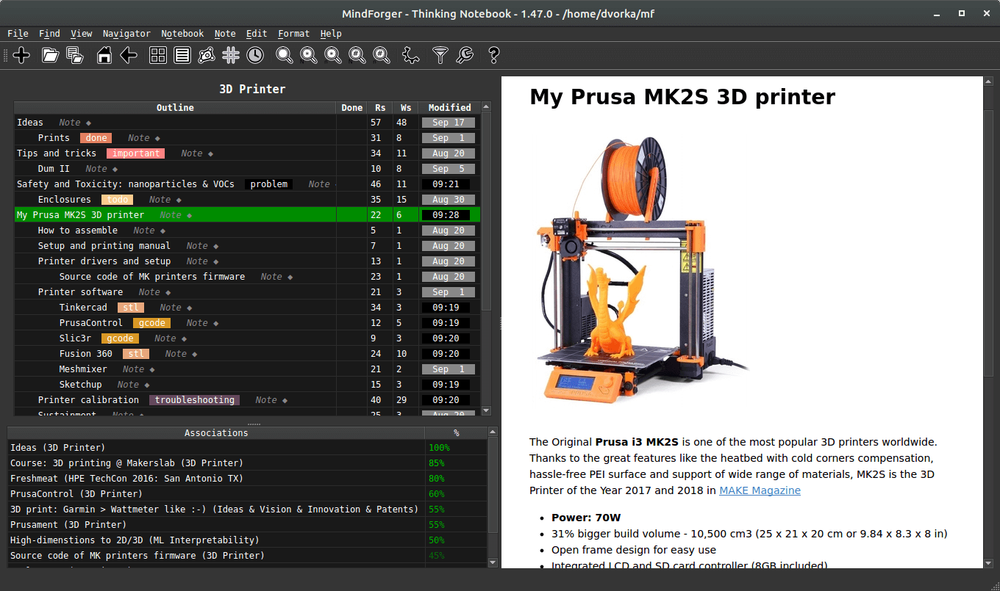
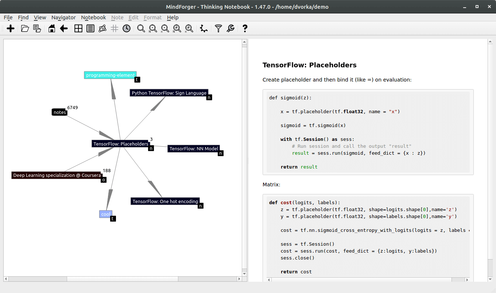
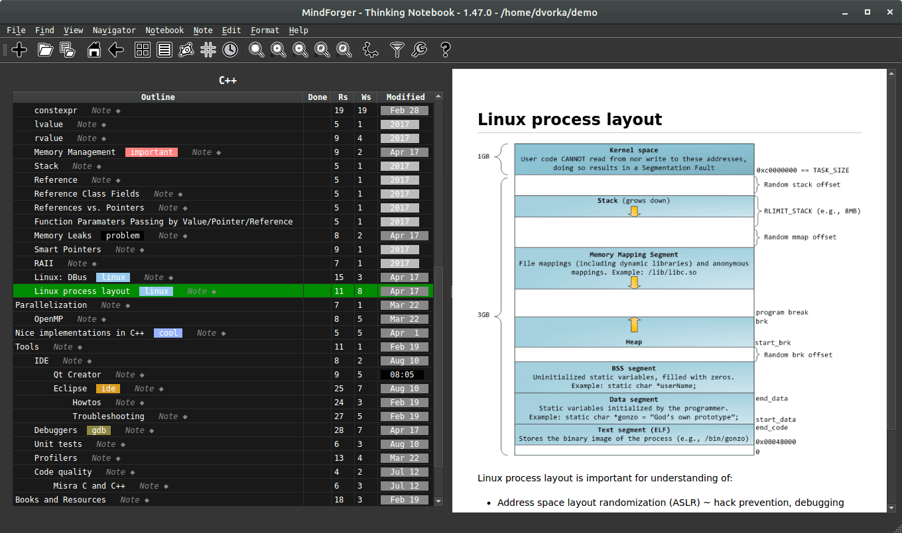
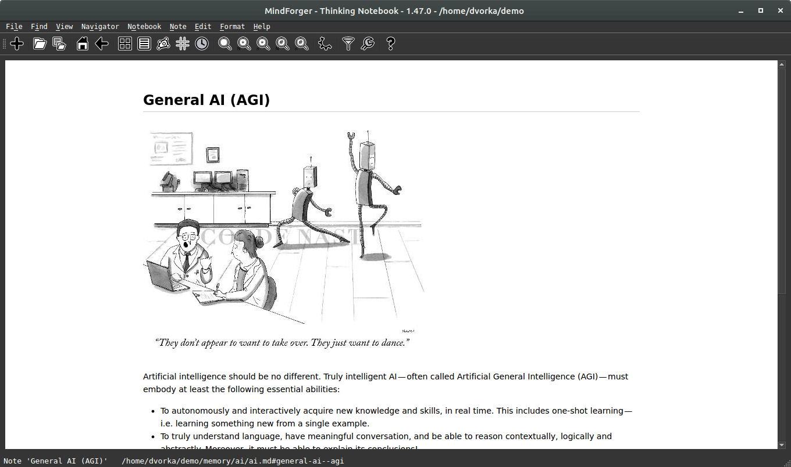
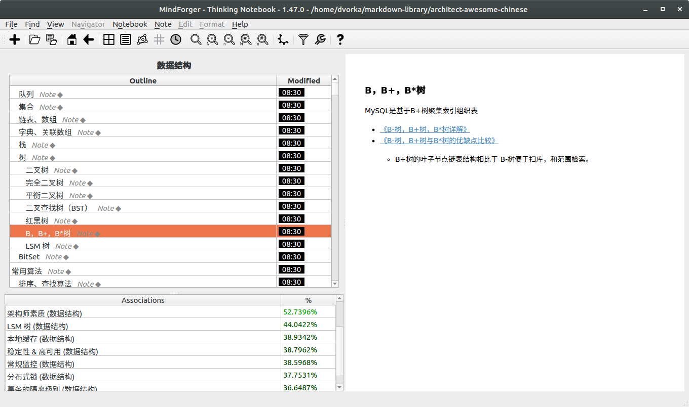
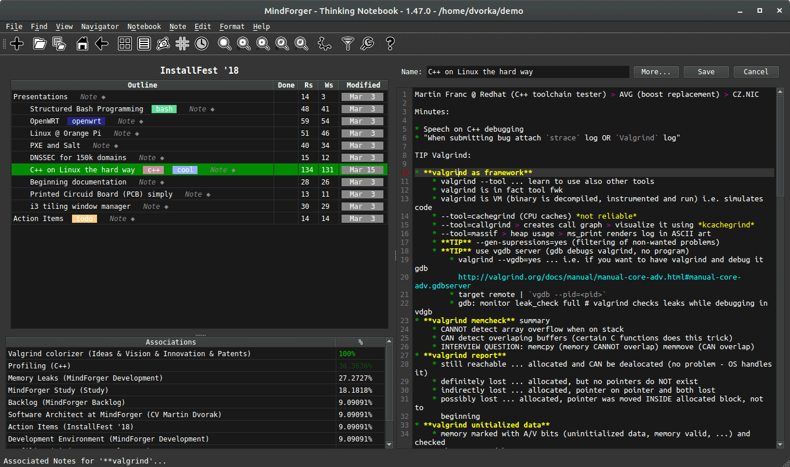
边读边想
知识图谱
带预览的 Markdown
Hoisting
多语言
边写边想
MindForger 力求模仿人类心智 - 学习、回忆、识别、
联想、遗忘 - 以求
与你的心智形成协同，让你的检索、
阅读和写作更有效率。
MindForger 确保你的个人数据由你自己拥有。
它尊重隐私，并让你的知识可以被安全保护。
MindForger 发掘隐藏在你笔记中的知识，
让它可以被挖掘利用。
MindForger 从编辑器和搜索引擎
止步的地方开始。你检索、浏览、阅读和书写时，它都在思考。当你找到
一条笔记，MindForger 会带来它的关联内容。当你浏览并阅读笔记时，
它会在你的笔记本中查找相关的知识。
当你编辑笔记时，MindForger 会在你书写的同时给出关联，
提醒你已经写过哪些与当前内容相关的东西。
MindForger 是一款面向 Linux 的桌面应用程序。
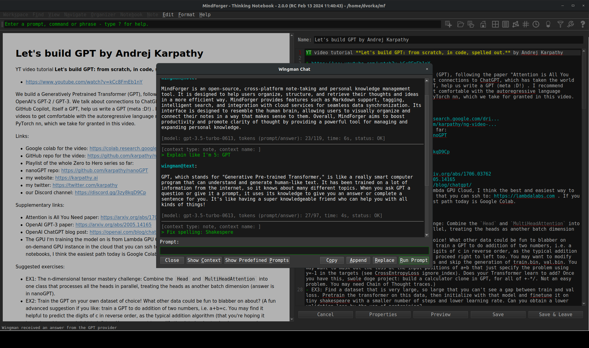
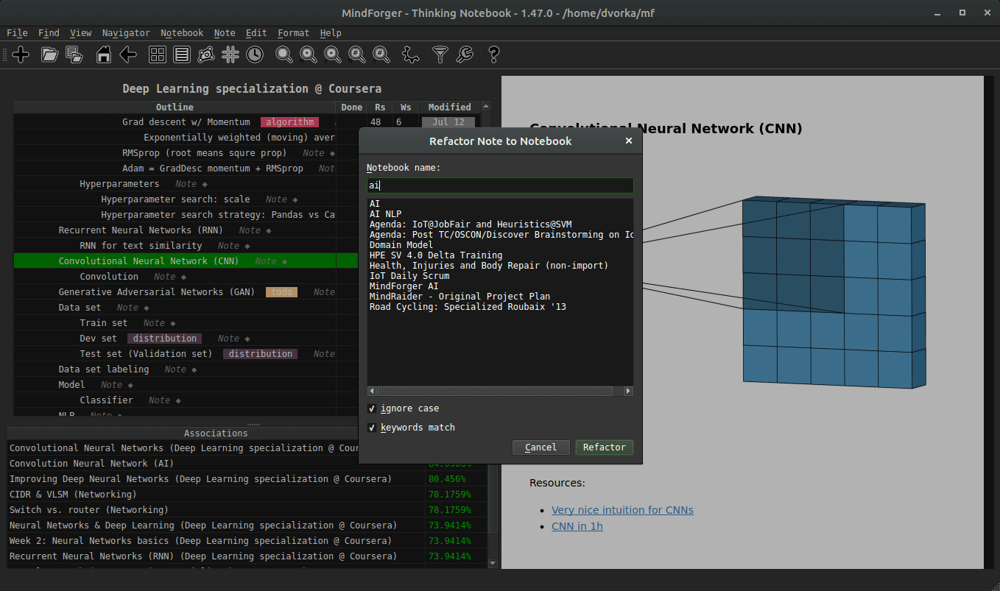
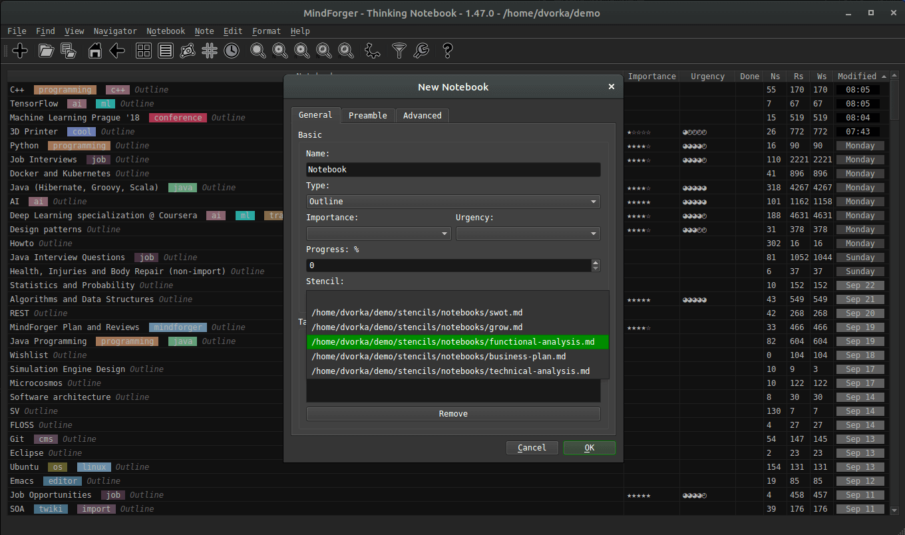
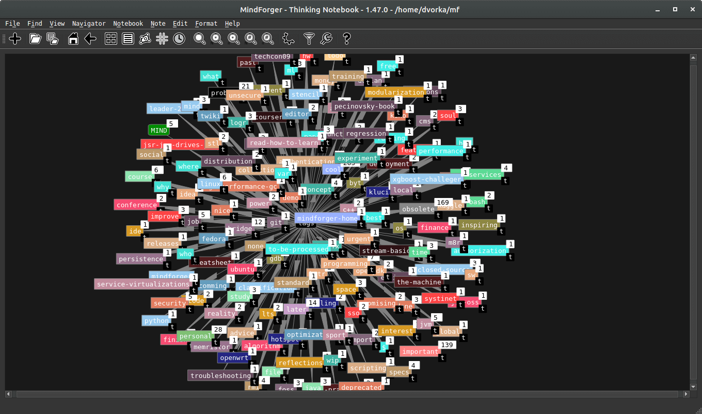
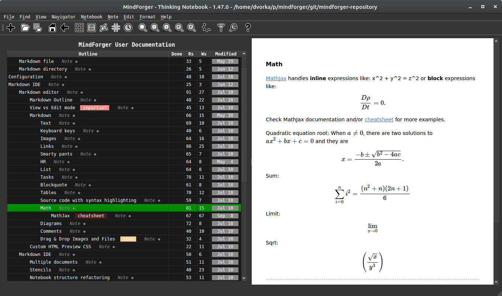
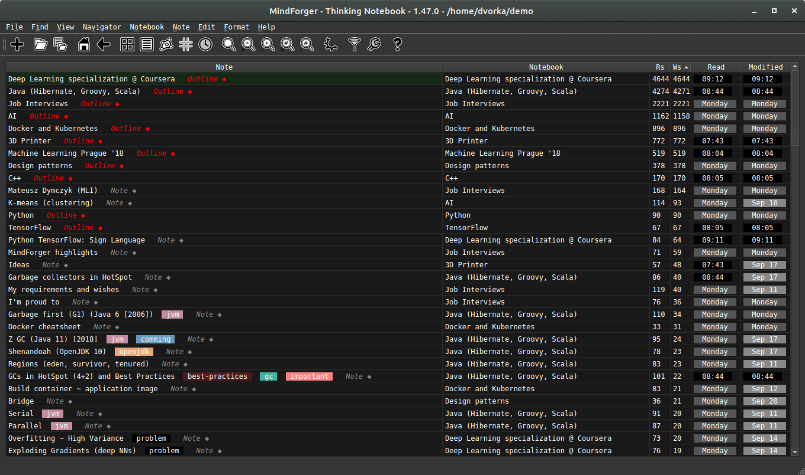
LLM
重构
模板
标签导航器
数学公式
最近的笔记
你读和写的时候，MindForger 也在思考。当你编辑一条笔记时，MindForger 会把它
与整个工作区中相关的笔记关联起来 - 包括那些你早已
遗忘自己写过的内容。关联在本地计算，
不需要云端，也不需要任何 LLM。
会自己生成的链接。文中提到的笔记本和笔记的名称，
会在预览中自动变成链接 - 你手写的链接显示为蓝色，
自动生成的显示为绿色 - 于是你的知识无需任何额外工夫
就彼此相连。不必手动建链接，不必使用 wiki 驼峰命名或其他约定。
一个不会把你的笔记发往任何地方的助手。AI 助手（Wingman）通过
ollama 在
你自己的机器上私密运行
开放权重的
大语言模型 - 例如 gpt-oss、Llama、GLM 或 Qwen - 为你阅读和书写的笔记
做摘要、
做解释、
做翻译、
做改写、修正
语法、生成
标签
或找出其中的
任务。
双手无需离开键盘。MindForger 的设计目标就是
不用鼠标 - 几乎每个操作都有快捷键，每个
菜单项都有助记键。几次击键就能按名称唤回笔记本或笔记，
轻松重排大纲，在输入时补全指向
笔记的链接，或者执行命令。你的想法
可以直接从脑中流进笔记。
从结构开始，而不是从空白页开始。用模板创建笔记本 -
会议纪要、软件分析与设计文档、S.M.A.R.T.E.R. 目标或
GROW 模型 - 并把想法记录为 16 种带类型的笔记之一，
比如想法、问题、教训、任务或 SWOT。你也可以按自己的思考方式
添加专属模板和笔记类型。
像重构源代码那样重构你的思路。MindForger 把 IDE 式的能力带进笔记 -
在同一个 Markdown 文件内或跨多个文件克隆、升级、降级、
移动和提取笔记，全部通过快捷键完成，
效率和速度都拉满。
在自己的知识中漫步。知识图谱导航器把笔记本、
笔记、标签及其关系绘制成可交互的力导向图，
你可以逐个节点地探索 - 就像一张隐式的思维导图。
知道接下来该做什么。看板和艾森豪威尔矩阵
组织器会按标签整理你的笔记本和笔记 - TODO、WIP、DONE，或者紧急
与重要 - 于是你不再需要另一个待办应用。
笔记本书架则让你把笔记本分组到任意多个命名书架上。
从笔记到笔记本，从笔记本到优先级和行动。
你的文件，你的工具。一切都是磁盘上的
纯 Markdown。
打开一个 MindForger 工作区、
任意已有的
Markdown 目录，
甚至只是
单个 Markdown
文件。用你信任的工具同步、分享、备份和加密
你的知识 - 自建 Git 服务器、私有的
GitHub 或
Bitbucket 仓库，
或者你喜欢的云盘。
Markdown 编辑器，支持实时预览、语法高亮、离线 KaTeX 数学公式和 Mermaid 图表、
拼写检查、表情符号、Emacs 按键绑定、
段落重排、hoist 模式，也可以用你喜欢的外部编辑器编辑笔记。
把存放 PDF 文档的目录索引为笔记本，保持同步，
并检测孤立文档。让你在阅读、学习和批注 PDF 时，
始终与自己的笔记相连。
把笔记本导出为 HTML 或 Markdown，或把整个工作区导出为
带 one-hot 编码标签的 CSV - 可直接交给你的机器学习和分析工具。
使用 C++ 和 Qt 编写，完全离线工作，可运行于
Linux、macOS 和 Windows。
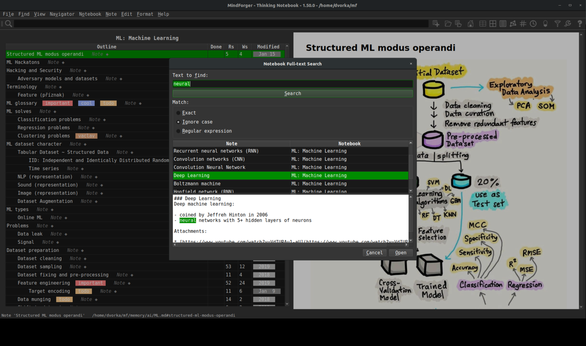
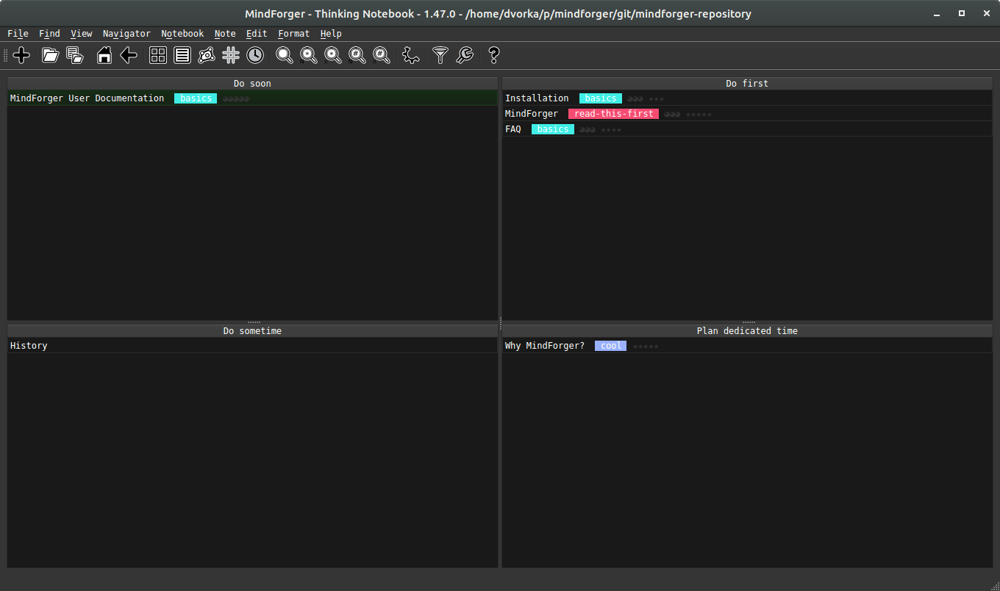
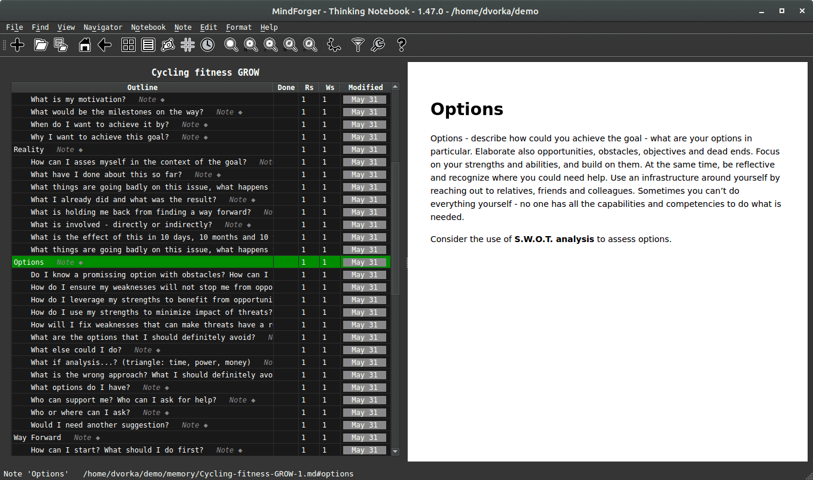
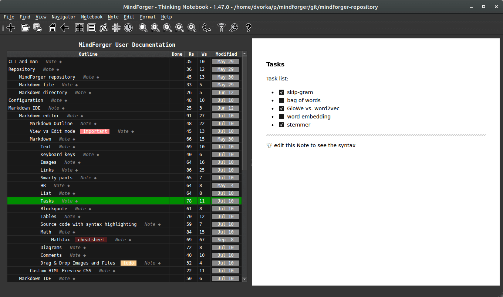
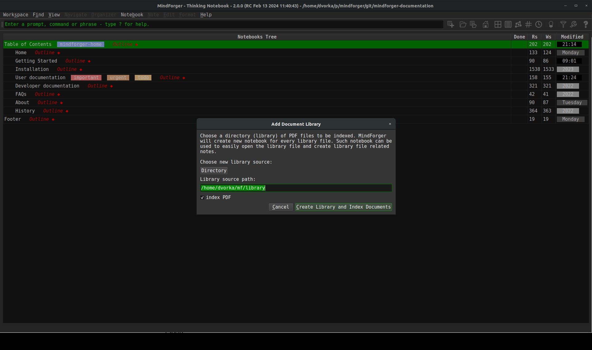
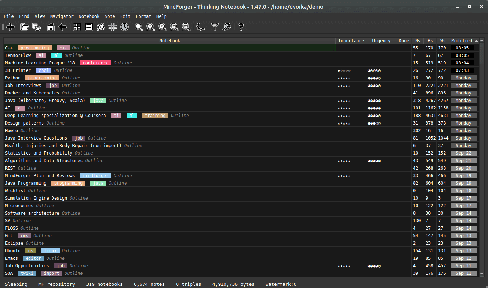
全文搜索
艾森豪威尔矩阵
G.R.O.W. 模型
任务清单
PDF 文档库
多文档
自由软件关乎
自由，而非价格 - 你可以自由地运行、研究、
修改和分享你的 MindForger 副本。它以
GNU GPL
授权，下载和使用
不收取任何费用。无需账号，也没有订阅。
MindForger 是一款 C++/Qt 原生应用。包含数千条笔记
和数百个 Markdown 文件的工作区可以在瞬间完成解析和索引，
之后的搜索、浏览和编辑都毫无延迟。
你的笔记就存放在你自己的机器上。MindForger 没有账号，没有
遥测，不会上传任何东西 - 既不上传你的数据，也不上传它的匿名摘要。
只要使用本地的 ollama 模型，连 AI 辅助也完全离线。
目前的 MindForger 实现只是一幅更宏大愿景的
初步且不完美的草图。它的目的是证明思考笔记本这个想法可行，并指出
可能的研究方向。
- 缺陷与建议 ... 提交缺陷、问题、想法和改进建议。
- 翻译 ... 把 MindForger 翻译成你的语言。
- 平台支持 ... 把 MindForger 移植到你喜欢的操作系统或发行版。
- 代码 ... 提交拉取请求或补丁，实现你想要却还没有的功能。
- 研究 ... 不妨把你的 AI/ML、NLP、数据挖掘研究，建立在（你自己的）已索引进 MindForger 本体的文档之上。
- 集成 ... 提供与你（喜欢的）项目集成的说明或代码。
- 改进 ... 提交性能、效率或生产力方面的改进。
- 文档 ... 写一篇文档、博客或推文，录一段 YouTube 视频，...